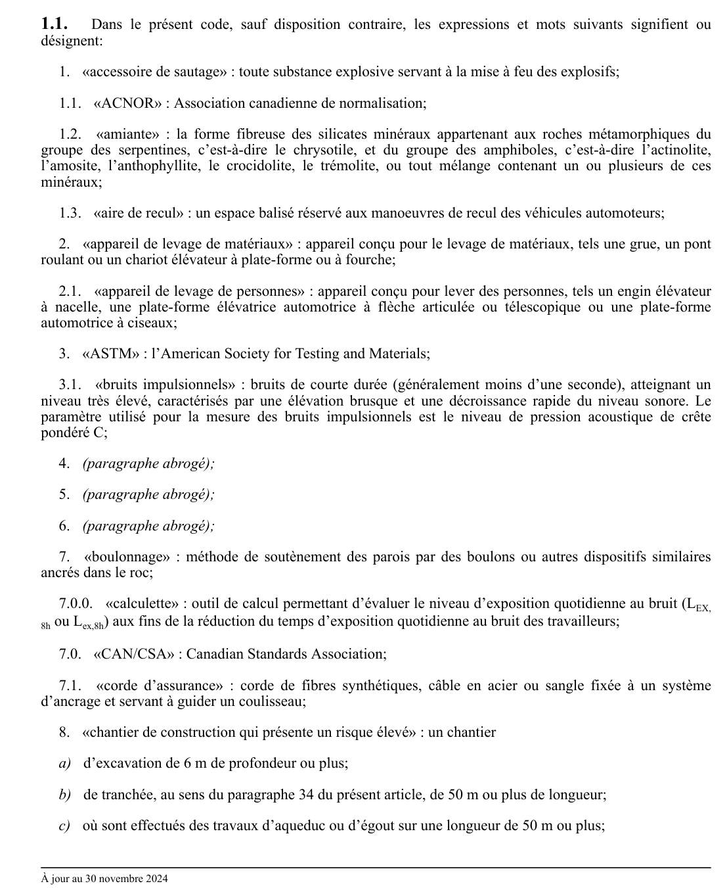

art-1.1-CSTC : dans le présent code, sauf disposition contraire
Dans le présent code, sauf disposition contraire, les expressions et mots suivants signifient ou désignent: 1. «accessoire de sautage» : toute substance explosive servant à la mise à feu des explosifs; 1.1. «ACNOR» : Association canadienne de normalisation;
🌐 LegisQuébec · 📄 PDF officiel
Texte officiel
Dans le présent code, sauf disposition contraire, les expressions et mots suivants signifient ou désignent:
1. «accessoire de sautage» : toute substance explosive servant à la mise à feu des explosifs;
1.1. «ACNOR» : Association canadienne de normalisation;
1.2. «amiante» : la forme fibreuse des silicates minéraux appartenant aux roches métamorphiques du groupe des serpentines, c’est-à-dire le chrysotile, et du groupe des amphiboles, c’est-à-dire l’actinolite, l’amosite, l’anthophyllite, le crocidolite, le trémolite, ou tout mélange contenant un ou plusieurs de ces minéraux;
1.3. «aire de recul» : un espace balisé réservé aux manoeuvres de recul des véhicules automoteurs;
2. «appareil de levage de matériaux» : appareil conçu pour le levage de matériaux, tels une grue, un pont roulant ou un chariot élévateur à plate-forme ou à fourche;
2.1. «appareil de levage de personnes» : appareil conçu pour lever des personnes, tels un engin élévateur à nacelle, une plate-forme élévatrice automotrice à flèche articulée ou télescopique ou une plate-forme automotrice à ciseaux;
3. «ASTM» : l’American Society for Testing and Materials;
3.1. «bruits impulsionnels» : bruits de courte durée (généralement moins d’une seconde), atteignant un niveau très élevé, caractérisés par une élévation brusque et une décroissance rapide du niveau sonore. Le paramètre utilisé pour la mesure des bruits impulsionnels est le niveau de pression acoustique de crête pondéré C;
4. (paragraphe abrogé);
5. (paragraphe abrogé);
6. (paragraphe abrogé);
7. «boulonnage» : méthode de soutènement des parois par des boulons ou autres dispositifs similaires ancrés dans le roc;
7.0.0. «calculette» : outil de calcul permettant d’évaluer le niveau d’exposition quotidienne au bruit (L
ou L ) aux fins de la réduction du temps d’exposition quotidienne au bruit des travailleurs;
7.0. «CAN/CSA» : Canadian Standards Association;
7.1. «corde d’assurance» : corde de fibres synthétiques, câble en acier ou sangle fixée à un système d’ancrage et servant à guider un coulisseau;
8. «chantier de construction qui présente un risque élevé» : un chantier
a) d’excavation de 6 m de profondeur ou plus;
b) de tranchée, au sens du paragraphe 34 du présent article, de 50 m ou plus de longueur;
c) où sont effectués des travaux d’aqueduc ou d’égout sur une longueur de 50 m ou plus;
d) souterrain;
e) où sont effectués des travaux en plongée ou en milieu hyperbare;
f) de démolition;
g) de bâtiment, de structure ou d’élément de structure de 15 m de hauteur ou plus;
h) de construction ou de réparation de lignes de transport d’énergie électrique ou des supports de celles- ci;
i) où sont effectués des travaux à une distance de 3 m ou moins d’une ligne électrique d’une tension supérieure à 750 V;
j) où sont effectués des travaux au-dessus ou à proximité de l’eau;
k) où sont effectués des travaux de dragage;
l) où sont effectués des travaux dans une centrale électrique ou dans un poste de transformation d’énergie électrique;
m) où sont effectués des travaux dans un espace clos;
n) où l’on fait l’usage ou la manutention d’explosifs;
o) où sont effectués des travaux à risque élevé au sens du paragraphe 3 de l’article 3.23.2 du présent Code;
8.1. «chantier de construction de grande importance» : un chantier où sont employés simultanément au moins 500 travailleurs à un moment donné des travaux;
9. «chantier souterrain» : un chantier de construction où s’effectuent des travaux reliés à l’excavation de tunnels ou de puits;
10. «charge nominale» : charge maximale établie par le fabricant;
11. «construction incombustible» : construction dont les membres de la charpente y compris les planchers et les assemblages sont faits de matériaux incombustibles;
12. (paragraphe abrogé);
12.0. «cordon d’assujettissement» : corde ou sangle dont une extrémité est fixée au harnais de sécurité et dont l’autre extrémité est fixée à un système d’ancrage ou à un autre élément d’une liaison antichute;
12.1. «creusement» : tout trou creusé dans le sol, y compris une excavation ou une tranchée;
13. «dépôt» : bâtiment, construction ou coffre dans lequel des explosifs sont entreposés;
13.1. (paragraphe abrogé);
13.2. «dBA» : pondération A - cette pondération réduit l’importance des fréquences extrêmes, en particulier les basses fréquences sous 200 Hz, et augmente celle des fréquences voisines de 2 500 Hz. La pondération A doit être utilisée pour toutes les mesures nécessaires pour évaluer le L ou L ;
13.3. «dBC» : pondération C - cette pondération réduit l’importance des fréquences égales ou inférieures à 31 Hz et de celles égales ou supérieures à 8 000 Hz. La pondération C doit être utilisée pour toutes les mesures nécessaires pour évaluer le niveau de pression acoustique de crête;
14. «écaillage» : purgeage tel que défini au paragraphe 31;
14.1. «échafaudage à crics» : un échafaudage à tour et à plate-forme constitué d’une plate-forme de travail qui se déplace le long de 2 colonnes au moyen de crics;
14.2. «échafaudage à tour et à plate-forme» : un échafaudage constitué d’une plate-forme de travail qui se déplace, en montée et en descente au moyen d’un système de levage, le long d’une ou de plusieurs colonnes ainsi que d’un système d’amarrage;
14.3. «échafaudage à treuils» : un échafaudage à tour et à plate-forme dont les colonnes sont reliées par des entretoises ou des croisillons supportant une plate-forme de travail qui se déplace au moyen d’un système de levage fait de treuils, de poulies et de câbles;
15. «échafaudage d’étaiement» : assemblage de cadres d’échafaudage tubulaire utilisé pour l’étaiement de coffrages à béton;
15.01. «échafaudage motorisé» : un échafaudage à tour et à plate-forme constitué d’un système de levage fait d’un moteur électrique, pneumatique, hydraulique, au gaz ou à l’essence;
15.1. «échafaudage volant» : une plateforme suspendue par un ou plusieurs câbles fixés à un ancrage et dont le déplacement vertical s’effectue au moyen d’un treuil manuel ou motorisé;
16. (paragraphe abrogé);
17. «entreprise d’exploitation d’énergie électrique» : une personne, société, compagnie, coopérative ou municipalité exploitant un réseau de transport ou de distribution d’énergie électrique;
17.1. «espace clos» : espace qui n’est pas conçu pour être occupé par une personne, notamment un réservoir, un silo, une cuve, un caisson, un pieu de fondation, une cheminée ou un puits d’accès;
17.2. «examen non destructif» : un examen par radiographie, ultrason, magnétoscopie ou ressuage, effectué et interprété par un opérateur d’appareillage en essais non destructifs certifié au niveau 2 par l’Organisme de certification national en essais non destructifs du ministère des Ressources naturelles du Canada en vertu de la norme Essais non destructifs - Qualification et certification du personnel, CAN/
Texte de l’article 1.1 CSTC, extrait de la couche texte du PDF officiel (page 5), sans OCR ni retouche. La capture ci-dessous et le PDF font foi.
{kind=link}

Toucher l'image pour l'agrandir🔗 CSTC.pdf : page 5 · texte à jour au 30 novembre 2024
📚 Source légale : R.R.Q., 1981, c. S-2.1, r. 6, a. 1.1; D. 749-83, a. 1 · LégisQuébec
Voir aussi
- ⚖️ Loi habilitante : LSST
- ↑ Section 1 : Définitions
Pages qui pointent ici (1)
- CSTC : Section 1 : Définitions Recueil législatif